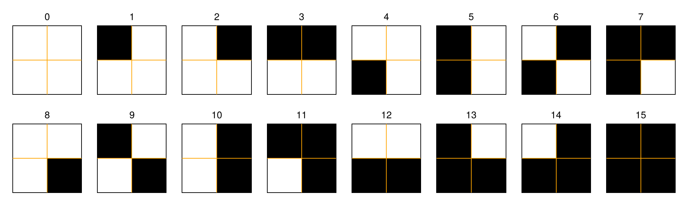

Distributions
This section introduces the computation of Recurrence Microstates Analysis (RMA) distributions using RecurrenceMicrostatesAnalysis.jl.
We begin with a Quick start with RecurrenceMicrostatesAnalysis.jl, which demonstrates a simple application example. Next, we present A brief review of Recurrence Plots (RP) and RMA. Finally, we explain the distribution function in Computing RMA distributions, including the role of Histograms.
Quick start with RecurrenceMicrostatesAnalysis.jl
This section presents concise examples illustrating how to use the package. RMA distributions are computed using the distribution function, which returns a Probabilities structure containing the microstate distribution.
We start with a simple example based on a uniform random process. First, we generate the data and convert it into a StateSpaceSet:
using Distributions, RecurrenceMicrostatesAnalysis
data = rand(Uniform(0, 1), 10_000);
ssset = StateSpaceSet(data)1-dimensional StateSpaceSet{Float64} with 10000 points
0.9181477894246795
0.7376526567070255
0.8770751302412709
0.8646680758445995
0.20609920944294213
0.23269754922822727
0.5232771418713881
0.6972493968575044
0.7468822640759929
0.1794797502666955
⋮
0.4770637485856397
0.47591544401435004
0.5232506415085975
0.9030577172786799
0.49466926651448984
0.009173415167210597
0.5047367252167707
0.5711357999746229
0.26220656049680524Next, we compute the RMA distribution. This requires specifying the recurrence threshold $\varepsilon$ and the microstate size $N$. These parameters are discussed in more detail in A brief review and Optimizing a parameter.
ε = 0.27
N = 2
dist = distribution(ssset, ε, N) Probabilities{Float64,1} over 16 outcomes
1 0.10862510329563847
2 0.04754649979065818
3 0.04743867824791393
4 0.08562850857601349
5 0.04790077057396068
6 0.0859465721251106
7 0.07943587128708315
8 0.029690532168327233
9 0.04800579155715312
10 0.0794228686891641
11 0.08555509390776277
12 0.029983790761394128
13 0.08548848059842357
14 0.02999959391886499
15 0.030153824734181888
16 0.07917801976834972As another example, we use DynamicalSystems.jl to generate data from the Hénon map, following the example presented in its documentation:
using DynamicalSystems
function henon_rule(u, p, n) # here `n` is "time", but we don't use it.
x, y = u # system state
a, b = p # system parameters
xn = 1.0 - a*x^2 + y
yn = b*x
return SVector(xn, yn)
end
u0 = [0.2, 0.3]
p0 = [1.4, 0.3]
henon = DeterministicIteratedMap(henon_rule, u0, p0)
total_time = 10_000
X, t = trajectory(henon, total_time)
X2-dimensional StateSpaceSet{Float64} with 10001 points
0.2 0.3
1.244 0.06
-1.10655 0.3732
-0.341035 -0.331965
0.505208 -0.102311
0.540361 0.151562
0.742777 0.162108
0.389703 0.222833
1.01022 0.116911
-0.311842 0.303065
⋮
-0.582534 0.328346
0.853262 -0.17476
-0.194038 0.255978
1.20327 -0.0582113
-1.08521 0.36098
-0.287758 -0.325562
0.558512 -0.0863275
0.476963 0.167554
0.849062 0.143089Finally, we compute the RMA distribution of the trajectory X. Here, the threshold is selected using optimize by maximizing the recurrence microstate entropy:
ε, S = optimize(Threshold(), RecurrenceEntropy(), X, N)(0.8634133023499923, 2.6083377796004132)dist = distribution(X, ε, N) Probabilities{Float64,1} over 16 outcomes
1 0.0502146
2 0.0267774
3 0.0536066
4 0.0535156
5 0.0538058
6 0.0534738
7 0.1055804
8 0.0417964
9 0.0153622
10 0.130498
11 0.0652074
12 0.0433426
13 0.0648464
14 0.0432874
15 0.0302684
16 0.168417A brief review
Recurrence Plots (RPs) were introduced in 1987 by Eckmann et al. (Eckmann et al., 1987) as a method for analyzing dynamical systems through recurrence properties.
Consider a time series $\vec{x}_i \in \mathbb{R}^d$, $i \in \{1, 2, \dots, K\}$, where $K$ is the length of the time series and $d$ is the dimension of the phase space. The recurrence plot is defined by the recurrence matrix
\[R_{i,j} = \Theta(\varepsilon - \|\vec x_i - \vec x_j\|),\]
where $\Theta(\cdot)$ denotes the Heaviside step function and $\varepsilon$ is the recurrence threshold.
The following figure shows examples of recurrence plots for different systems: (a) white noise; (b) a superposition of harmonic oscillators; (c) a logistic map with a linear trend; (d) Brownian motion.

A recurrence microstate is a local structure extracted from an RP. For a given microstate shape and size, the set of possible microstates is finite. For example, square microstates with size $N = 2$ yield $16$ distinct configurations.

Recurrence Microstates Analysis (RMA) uses the probability distribution of these microstates as a source of information for characterizing dynamical systems.
Computing RMA distributions
The computation of RMA distributions is the core functionality of RecurrenceMicrostatesAnalysis.jl. All other tools in the package rely on these distributions as their primary source of information.
RMA distributions are computed using the distribution function:
RecurrenceMicrostatesAnalysis.distribution — Function
distribution(core::RMACore, [x], [y])Compute an RMA distribution from the recurrence structure constructed using the input data [x] and [y].
If [x] and [y] are identical, the result corresponds to a Recurrence Plot (RP); otherwise, it corresponds to a Cross-Recurrence Plot (CRP).
The core argument must be a subtype of RMACore and defines how the computation is performed, including the execution backend (CPU or GPU), the microstate shape, the recurrence expression, and the sampling mode.
The result is returned as a Probabilities object, where each index corresponds to the decimal representation of the associated microstate.
Internally, distribution calls histogram and converts the resulting counts into probabilities.
distribution(core::CPUCore, [x], [y]; kwargs...)Compute an RMA distribution for the input data [x] and [y] using a CPU backend configuration defined by core, which must be a CPUCore.
For time-series analysis, the inputs [x] and [y] must be provided as StateSpaceSet objects. For spatial analysis, the inputs must be provided as AbstractArrays.
Arguments
core: ACPUCoredefining theMicrostateShape,RecurrenceExpression, andSamplingModeused in the computation.[x]: Input data provided as aStateSpaceSetor anAbstractArray.[y]: Input data provided as aStateSpaceSetor anAbstractArray.
Keyword Arguments
threads: Number of threads used to compute the distribution. By default, this is set toThreads.nthreads(), which can be specified at Julia startup using--threads Nor via theJULIA_NUM_THREADSenvironment variable.
Examples
- Time series:
ssset = StateSpaceSet(rand(Float64, (1000)))
core = CPUCore(Rect(Standard(0.27), 2), SRandom(0.05))
dist = distribution(core, ssset, ssset)- Spatial data:
spatialdata = rand(Float64, (3, 50, 50))
core = CPUCore(Rect(Standard(0.5), (2, 2, 1, 1)), SRandom(0.05))
dist = distribution(core, spatialdata, spatialdata)distribution(core::GPUCore, [x], [y]; kwargs...)Compute an RMA distribution for the input data [x] and [y] using a GPU backend configuration defined by core, which must be a GPUCore.
The inputs [x] and [y] must be vectors of type AbstractGPUVector. This method supports time-series analysis only.
Arguments
core: AGPUCoredefining theMicrostateShape,RecurrenceExpression, andSamplingModeused in the computation.[x]: Input data provided as anAbstractGPUVector.[y]: Input data provided as anAbstractGPUVector.
Keyword Arguments
groupsize: Number of threads per GPU workgroup.
Examples
using CUDA
gpudata = StateSpaceSet(Float32.(data)) |> CuVector
core = GPUCore(CUDABackend(), Rect(Standard(0.27f0; metric = GPUEuclidean()), 2), SRandom(0.05))
dist = distribution(core, gpudata, gpudata)Spatial data are not supported by GPUCore.
A commonly used convenience interface is:
distribution([x], ε::Float, n::Int; kwargs...)This method automatically selects a CPUCore when x is a StateSpaceSet and a GPUCore when x is an AbstractGPUVector. By default, square microstates of size n are used.
Additional keyword arguments include:
rate::Float64: Sampling rate (default:0.05).sampling::SamplingMode: Sampling mode (default:SRandom).metric::Metric: Distance metric from Distances.jl. When using aGPUCore, aGPUMetricmust be provided.
Alternatively, a RecurrenceExpression can be specified directly:
distribution([x], expr::RecurrenceExpression, n::Int; kwargs...)Example:
expr = Corridor(0.05, 0.27)
dist = distribution(ssset, expr, 2) Probabilities{Float64,1} over 16 outcomes
1 0.17559188325827502
2 0.0822046244839719
3 0.0826507136125798
4 0.0636505173733712
5 0.08227243803311901
6 0.06349048539898272
7 0.05652609391356393
8 0.023804156070382863
9 0.082536690830828
10 0.05672093284238191
11 0.06323403416002517
12 0.02389897501520804
13 0.06330664866840395
14 0.02388657253719293
15 0.02406460810870012
16 0.032160625693013464If a custom MicrostateShape is required, the call simplifies to:
distribution([x], shape::MicrostateShape; kwargs...)Example:
shape = Triangle(Standard(0.27), 3)
dist = distribution(ssset, shape) Probabilities{Float64,1} over 64 outcomes
1 0.03331091770489842
2 0.026944172280077575
3 0.014209681030475985
4 0.012770305568166152
5 0.015314322666201948
6 0.011747896809144296
7 0.02587154344306854
8 0.02315785851183303
9 0.012917364362272036
10 0.011827728725944633
⋮
56 0.006515805018846535
57 0.021455778020052416
58 0.02039315318264242
59 0.007455180581196362
60 0.007854540245190026
61 0.007903559843225322
62 0.007544416257619796
63 0.019776506647357615
64 0.019600436254414516Cross-recurrence plots
RMA distributions can also be computed from Cross-Recurrence Plots (CRPs) by providing two time series:
distribution([x], [y], expr::RecurrenceExpression, n::Int; kwargs...)
distribution([x], [y], shape::MicrostateShape; kwargs...)Example:
data_1 = StateSpaceSet(rand(Uniform(0, 1), 1000))
data_2 = StateSpaceSet(rand(Uniform(0, 1), 2000))
dist = distribution(data_1, data_2, 0.27, 2) Probabilities{Float64,1} over 16 outcomes
1 0.11070495037606033
2 0.04930346215861634
3 0.050415118526604644
4 0.08877227068331814
5 0.05075562588256502
6 0.08059007921803488
7 0.07609337913491102
8 0.029523990746211856
9 0.05001452163723949
10 0.07640384172416902
11 0.07992909435058236
12 0.029183483390251473
13 0.08831158426054822
14 0.0306156172697319
15 0.03007481146908894
16 0.07930816917206637The inputs x and y must have the same phase-space dimensionality. The following example is invalid and will raise an exception:
data_1 = StateSpaceSet(rand(Uniform(0, 1), (1000, 2)))
data_2 = StateSpaceSet(rand(Uniform(0, 1), (2000, 3)))
dist = distribution(data_1, data_2, 0.27, 2)Spatial data
The package also provides experimental support for spatial data, following "Generalised Recurrence Plot Analysis for Spatial Data" (Marwan et al., 2007). In this context, input data are provided as AbstractArrays:
\[ \vec{x}_{\vec i} \in \mathbb{R}^m,\quad \vec{i} \in \mathbb{Z}^d\]
For example:
spatialdata = rand(Uniform(0, 1), (2, 50, 50))2×50×50 Array{Float64, 3}:
[:, :, 1] =
0.837543 0.832039 0.405596 0.634079 … 0.104151 0.852926 0.325993
0.73013 0.203631 0.716634 0.355302 0.232077 0.819482 0.101903
[:, :, 2] =
0.985482 0.781571 0.547943 0.916575 … 0.426315 0.614576 0.308478
0.253858 0.902717 0.299349 0.252616 0.194315 0.187666 0.684577
[:, :, 3] =
0.560042 0.116219 0.193263 0.0630863 … 0.28476 0.308449 0.993112
0.688617 0.701533 0.778588 0.232676 0.851671 0.0142115 0.836554
;;; …
[:, :, 48] =
0.253218 0.958914 0.788832 0.896352 … 0.521199 0.611284 0.73656
0.580468 0.673598 0.573154 0.79016 0.478294 0.906195 0.0124456
[:, :, 49] =
0.692501 0.395775 0.902183 0.957165 … 0.183003 0.738007 0.999518
0.868155 0.772685 0.132986 0.813592 0.340578 0.144203 0.660738
[:, :, 50] =
0.193416 0.210922 0.773942 0.973094 … 0.604624 0.494345 0.670187
0.12125 0.708432 0.303553 0.477865 0.0186459 0.34146 0.096759Due to the high dimensionality of spatial recurrence plots, direct visualization is often infeasible. RMA distributions provide a compact alternative by sampling microstates directly from the data.
Examples:
- Full $2 \times d$ microstates:
distribution(spatialdata, Rect(Standard(0.27), (2, 2, 2, 2))) Probabilities{Float64,1} over 65536 outcomes
1 0.05893332315666404
2 0.00908614666199465
3 0.008805131816778321
4 0.002393830162953917
5 0.008749622711550404
6 0.0026366824983260536
7 0.0024736245017190476
8 0.0007701888350373472
9 0.009252673977678401
10 0.002393830162953917
⋮
65528 0.0
65529 0.0
65530 0.0
65531 0.0
65532 0.0
65533 0.0
65534 0.0
65535 0.0
65536 0.0spatialdata_1 = rand(Uniform(0, 1), (2, 50, 50))
spatialdata_2 = rand(Uniform(0, 1), (2, 25, 25))
distribution(spatialdata_1, spatialdata_2, Rect(Standard(0.27), (2, 2, 2, 2))) Probabilities{Float64,1} over 65536 outcomes
1 0.06211225035792275
2 0.008864914893924714
3 0.008821530318587399
4 0.002834458922037918
5 0.008431069140551563
6 0.0021113826664160003
7 0.002415074693777206
8 0.0007230762556219179
9 0.008676915067463015
10 0.0023138440179901374
⋮
65528 0.0
65529 0.0
65530 0.0
65531 0.0
65532 0.0
65533 0.0
65534 0.0
65535 0.0
65536 0.0- Projected microstates:
distribution(spatialdata, Rect(Standard(0.27), (2, 1, 2, 1))) Probabilities{Float64,1} over 16 outcomes
1 0.4681049562682216
2 0.09348438150770512
3 0.09396418159100375
4 0.024176593086214077
5 0.09288463140358184
6 0.024816326530612245
7 0.021667638483965013
8 0.0031520199916701373
9 0.09368096626405664
10 0.02188421491045398
11 0.024386505622657227
12 0.003108704706372345
13 0.024872969596001666
14 0.003165347771761766
15 0.003008746355685131
16 0.0036418159100374842distribution(spatialdata_1, spatialdata_2, Rect(Standard(0.27), (2, 1, 2, 1))) Probabilities{Float64,1} over 16 outcomes
1 0.46896598639455783
2 0.09306122448979592
3 0.09299319727891156
4 0.023863945578231294
5 0.09323809523809524
6 0.02438095238095238
7 0.021619047619047618
8 0.0032653061224489797
9 0.09372789115646259
10 0.021306122448979593
11 0.024884353741496598
12 0.0036598639455782313
13 0.02489795918367347
14 0.0029523809523809524
15 0.0033197278911564626
16 0.0038639455782312924Histograms
The histogram function counts the occurrences of each microstate identified during sampling. It is called internally by distribution , which converts the resulting Counts into Probabilities.
RecurrenceMicrostatesAnalysis.histogram — Function
histogram(core::RMACore, [x], [y])Compute the histogram of recurrence microstates for the input data [x] and [y] using the specified backend core, which must be an RMACore.
This function executes the full backend pipeline: sampling the recurrence space, constructing microstates, and evaluating recurrences.
The result is returned as a Counts object, where each index corresponds to the decimal representation of the associated microstate.
histogram(core::StandardCPUCore, [x], [y]; kwargs...)Compute the histogram of recurrence microstates for an abstract recurrence structure constructed from the input data [x] and [y].
If [x] and [y] are identical, the result corresponds to a Recurrence Plot (RP); otherwise, it corresponds to a Cross-Recurrence Plot (CRP).
The result is returned as a Counts object representing the histogram of recurrence microstates for the given input data.
This method implements the CPU backend using a CPUCore, specifically the StandardCPUCore implementation.
Arguments
core: AStandardCPUCoredefining the CPU backend configuration.[x]: Input data provided as aStateSpaceSetor anAbstractArray.[y]: Input data provided as aStateSpaceSetor anAbstractArray.
StateSpaceSet and AbstractArray inputs use different internal backends and therefore different histogram implementations. Both interfaces share the same method signature, differing only in the input data representation.
Keyword Arguments
threads: Number of threads used to compute the histogram. By default, this is set toThreads.nthreads(), which can be specified at Julia startup using--threads Nor via theJULIA_NUM_THREADSenvironment variable.
Examples
- Time series:
ssset = StateSpaceSet(rand(Float64, (1000)))
core = CPUCore(Rect(Standard(0.27), 2), SRandom(0.05))
dist = histogram(core, ssset, ssset)- Spatial data:
spatialdata = rand(Float64, (3, 50, 50))
core = CPUCore(Rect(Standard(0.5), (2, 2, 1, 1)), SRandom(0.05))
dist = histogram(core, spatialdata, spatialdata)histogram(core::StandardGPUCore, [x], [y]; kwargs...)Compute the histogram of recurrence microstates for an abstract recurrence structure constructed from the input data [x] and [y].
If [x] and [y] are identical, the result corresponds to a Recurrence Plot (RP); otherwise, it corresponds to a Cross-Recurrence Plot (CRP).
The result is returned as a Counts object representing the histogram of recurrence microstates for the given input data.
This method implements the GPU backend using a GPUCore, specifically the StandardGPUCore implementation.
Arguments
core: AStandardGPUCoredefining the GPU backend configuration.[x]: Input data provided as anAbstractGPUVector.[y]: Input data provided as anAbstractGPUVector.
Keyword Arguments
groupsize: Number of threads per GPU workgroup.
Examples
using CUDA
gpudata = StateSpaceSet(Float32.(data)) |> CuVector
core = GPUCore(CUDABackend(), Rect(Standard(0.27f0; metric = GPUEuclidean()), 2), SRandom(0.05))
dist = histogram(core, gpudata, gpudata)